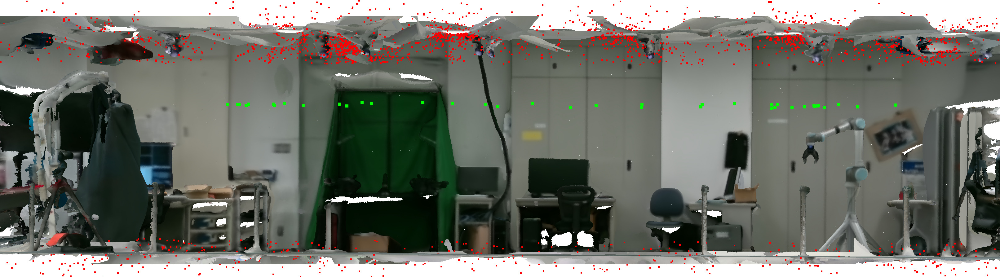

1 CNRS-AIST Joint Robotics Laboratory (JRL), IRL, Tsukuba, Japan.
2 MIS laboratory, University of Picardie Jules Verne, Amiens, France.
Visual sensors are central to humanoid and mobile robotics, with RGB-D cameras widely used for Simultaneous Localization and Mapping (SLAM) thanks to their depth perception. However, they remain limited by their narrow field of view and restricted sensing range. In this work, we compare the performance of an RGB-D sensor (Microsoft Azure Kinect) with an omnidirectional camera (Insta360 One X2) for visual SLAM on humanoid robots. Using the state-of-the-art system Stella-VSLAM, we evaluate their ability to correct trajectories when reaching a target. Our results show that the omnidirectional camera can surpass the RGB-D camera in both accuracy and robustness, particularly in challenging or dynamic environments.
Visual Simultaneous Localization And Mapping (VSLAM) with an RGB-D camera is the gold standard to help correcting humanoid robots' drift while walking toward a goal pose indoors. But, the bounded range and Field Of View (FOV) of these cameras constrain the use cases for humanoids to few changes in the environment. At the same time, compact omnidirectional cameras capable of a 360º FOV are spreading quickly at low cost, offering more possibilities to the VSLAM system to observe reliable features whichever the robot orientation. Thus, this paper investigates the VSLAM with a 360º camera versus an RGB-D one in the humanoid head for correcting the walking drift of a baseline walking controller over several meters. The Baseline Biped Positioning hence made is evaluated regarding final pose accuracy improvement and robustness to environmental changes by leveraging multiple sets of real experiments on a 1.8m tall humanoid robot.
Experiment principle: for both camera feeding a VSLAM algorithm, correct the walking error to a target.
Environment where the experiments took place in.
@inproceedings{caillot2025rgbdOmni,
title={RGB-D versus omnidirectional visual SLAM in humanoid robot positioning},
author={Caillot, Antoine and André, Antoine N. and Duvinage, Thomas and and Caron, Guillaume},
booktitle={2025 24th IEEE Int. Conf. on Humanoids Robots},
year={2025},
organization={IEEE}
}